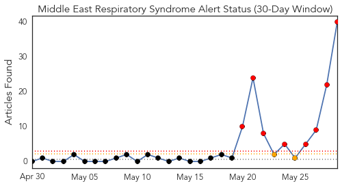
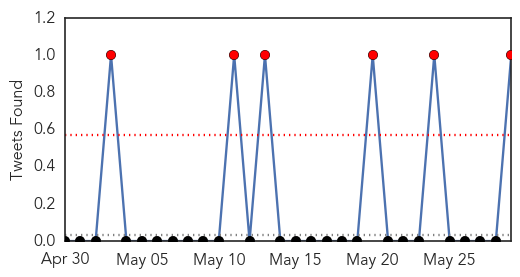
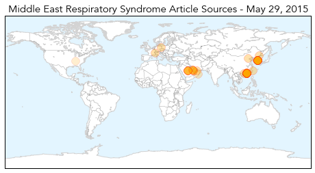
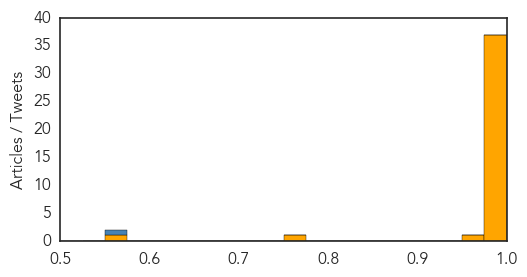

Toggle navigation
Early Warning
Daily Alerts
Middle East Respiratory Syndrome
May 29, 2015
Compare to:
-
Dengue Fever
Hemmorhagic Fever
Mold/Fungal Infection
Influenza
Meningitis
Pertussis / Whooping Cough
Cholera
Hepatitis
Chikungunya
Yellow Fever
Bubonic Plague
West Nile Virus
Swine Flu
Ebola
Measles
Unknown
Mumps
30 Day Trends
Web: 8
alerts
, 2
warnings
Twitter: 6
alerts
, 0
warnings
Top Articles:
1.000
Middle East respiratory syndrome coronavirus (MERS-CoV)
0.999
China's first confirmed MERS case arrived from Korea
0.999
China's first confirmed MERS case arrived from Korea via Hong Kong
0.999
China's first confirmed MERS case arrived from Korea via Hong Kong
0.999
China's first confirmed MERS case arrived from Korea via Hong Kong
0.999
China's first confirmed MERS case arrived from Korea via Hong Kong
0.999
China's first confirmed MERS case arrived from Korea via Hong Kong
0.999
MERS Virus Now in China and Korea Besides Saudi Arabia
0.999
The Chosun Ilbo (English Edition): Daily News from Korea
0.998
MERS Spreads to China from Korean Outbreak
0.998
MERS fears grow as 13th case confirmed
0.998
China’s first confirmed Mers case ‘arrived from Korea’
0.997
Mers virus: China tracking nearly 200 for possible infections
0.996
Taiwan rules out MERS-CoV ...｜Society｜WCT
0.996
South Korean becomes China's first confirmed MERS case
0.996
UPDATE 2-South Korean becomes China's first confirmed MERS case
0.996
South Korean becomes China's first confirmed MERS case
0.996
South Korean becomes China's first confirmed MERS case
0.995
South Korean becomes China's first confirmed MERS case
0.995
China, Hong Kong on High Alert After Reported MERS Case
0.995
CORRECTED-UPDATE 1-S.Korea's tally of MERS cases at 7; one suspected patient heads to China
0.995
South Korea's tally of MERS cases at 7; one suspected patient heads to China
0.994
China Reports First MERS Virus Case in South Korean Traveler
0.993
China confirms first MERS case
0.993
China confirms first MERS case
0.993
China’s First Encounter with MERS
0.993
Korean brought MERS into China-INSIDE Korea JoongAng Daily
0.991
South Korean becomes China’s first confirmed Mers case, East Asia News & Top Stories
0.991
South Korean becomes China’s first confirmed Mers case, East Asia News & Top Stories
0.991
Concern grows over spread of Mers as man defies quarantine, travels to China
0.990
South Korean Man Becomes China's First Confirmed MERS Case
0.990
A deadly SARS-like virus has jumped from the Middle East to East Asia
0.989
Seoul confirms seventh MERS case , news, Health News, AsiaOne YourHealth
0.988
Beijing made 'tight plans' to prevent spread of MERS virus[1]- Chinadaily.com.cn
0.988
Beijing made 'tight plans' to prevent spread of MERS virus
0.979
Health Ministry inspects MERS-CoV preventive measures in Can Tho
0.978
China confirms first MERS virus case
0.971
Taiwan takes precautions against MERS
0.762
Qatar reports 1st coronavirus fatality this year
0.562
Deadly viruses lurking in Tennessee labs
Top Tweets:
0.555
Avian Flu Diary: Hong Kong Activates Alert Response To MERS-CoV
http://t.co/Nibs2K73UD
Web/News Articles

Tweets

Article Locations

Article Confidences
